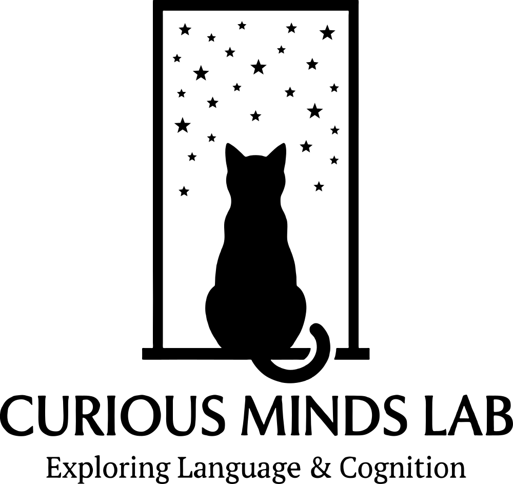
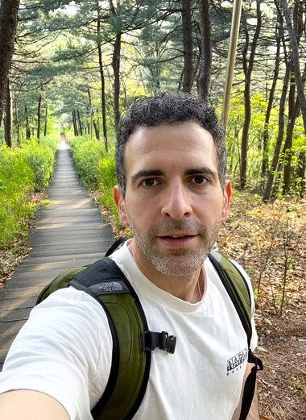
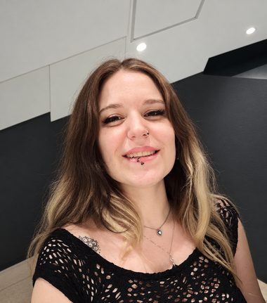
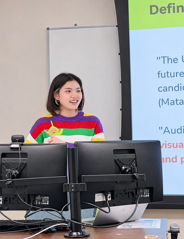
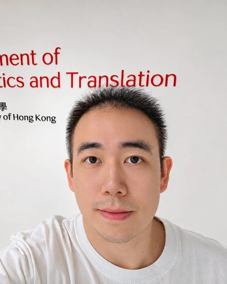
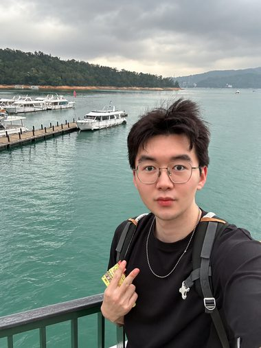
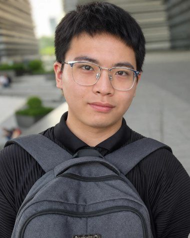

We are curious about how minds work.

Language is one of the most powerful ways we make sense of the world. We study how speaking different languages, living in different cultures and having different experiences shape what words mean, how we think and feel, and how we understand one another. We combine behavioural experiments with computational approaches to answer these questions from different angles. Welcome to the Curious Minds Lab!
Our philosophy
“Curiosity is my favourite word. Perhaps that explains why I ended up, almost by accident, becoming a researcher. Curiosity is also one of those qualities we like to think makes us distinctly human—although my cat would probably challenge that claim.
However you conceptualize curiosity—whether as a search algorithm optimised for survival, an evolved drive to reduce uncertainty, or simply a psychological trait—curiosity is at the heart of good research.
Curiosity means relentlessly asking questions and being willing to follow them into places where the answer is uncertain, uncomfortable, or not the one we hoped for. Sometimes the most interesting questions lead to answers we are not ready for. But that is precisely the point. We ask, we find out, and then we ask again.
Curious Minds Lab is a place to channel that curiosity—to ask questions that matter, challenge what we think we know, and explore the many things about language and the mind that we still do not understand.”
Adel Chaouch-Orozco, Principal Investigator
What we study
We want to understand how minds make meaning.
Our research asks how meaning is represented and used: how words and concepts are stored, how they are retrieved and processed in real time, and how both are shaped by experience, language and culture. We work across languages and populations, combining behavioural and computational methods.
-
01
Language and multilingual minds
How does knowing and using different languages change the mind? We examine how languages coexist and interact, how speakers select between them, and how multilingual experience develops over time.
-
02
Meaning and semantic structure
How are words and concepts organised in the mind? We trace how meanings are represented, connected and retrieved, and how those structures change across languages, individuals and experiences.
-
03
Emotion, culture and cognition
Language, thought and emotion continually shape one another. We investigate how people from different linguistic and cultural backgrounds understand emotions, organise concepts and make sense of their experiences.
-
04
Humans and AI
Artificial intelligence gives us both a new object of study and a new way to investigate the mind. We compare human and artificial systems, and ask when AI can meaningfully support reasoning, learning and education.
How we work
Staying curious
We want to stay curious and ask questions that matter. We are not attached to a particular method, and we do not choose questions because they are fashionable. What matters is whether a question can teach us something important and move the field forward.
Challenging ideas
Ideas get better when they are challenged. We question assumptions, disagree openly and give each other detailed feedback. We can be demanding about the work while remaining generous and respectful towards the person behind it.
Owning your research
Curious Minds Lab is a platform to grow into an independent researcher. You are encouraged to take ownership of your ideas and projects, trust and sharpen your own judgement, and gradually build a research identity that is genuinely yours.
Growing together
We want the lab to be a place where people enjoy being together, support one another and genuinely care about how everyone is doing. We share ideas, celebrate each other’s progress and make time for one another. More than a group of people working on separate projects, we want to feel like a real family.
People

Principal Investigator
Adel Chaouch-Orozco
I am an Assistant Professor in the Department of Linguistics and Translation at City University of Hong Kong. My work uses language as a way into understanding cognition, examining how multilingual experience, culture and emotion shape this interaction. In the lab, I encourage people to pursue questions they genuinely care about, challenge assumptions and build research that they can make their own.
-

Lavinia Salicchi
Postdoctoral researcher
Lavinia works on the cognitive processes underlying real-time sentence comprehension. Her research combines psycholinguistics and computational modelling, using eye-tracking, electrophysiological measures, and language models to investigate how readers process sentences as they unfold.
-

Amanda Hiu Tung Chow
Postdoctoral researcher
Amanda examines audio description and inclusive language, with a growing interest in cognitive and experimental approaches. Her research explores how language can convey visual information and support accessible communication.
-
Li Lu
PhD candidate
Li Lu asks how meaning is constructed, represented, and transformed across contexts, cultures, and time. Combining psycholinguistic experiments with computational approaches, Li Lu investigates emotion semantics and how artificial intelligence can inform our understanding of language and cognition.
-

Yunlong Zhang
PhD candidate
Yunlong studies bilingualism, language control, and the relationship between language and cognition, including language acquisition in educational settings. He uses eye-tracking and statistical modelling to investigate how people process linguistic and non-linguistic information in experimental tasks.
-

Ziyang Tian
PhD candidate
Ziyang investigates how readers construct meaning from unfamiliar words, particularly novel Chinese compounds. His research examines how character ambiguity, relationships between constituents, and linguistic context interact to shape the interpretation of new words.
-

Dongzheng (Aris) Wu
Prospective PhD candidate
Aris explores how meaning influences Chinese character and word processing at different levels, from strokes to radicals. Using eye-tracking, he also investigates how emotional arousal in text affects readers’ reliance on local and broader linguistic context.
Recent publications
-
2026
-
2026
-
2026
-
2025
-
2024
News
-
Sep 2026
-
Sep 2026
New research on bilingual language control and cognitive load is published in Memory & Cognition.
-
Aug 2026
Join the lab
Bring us a question you cannot stop thinking about.
We welcome enquiries from prospective PhD students whose interests connect with the questions we study: multilingual minds, meaning and semantic structure, emotion and culture, or humans and AI. You do not need to arrive with the perfect method or a fully formed project. What matters more is curiosity, independence and a question you genuinely want to understand. Research assistant opportunities may also be available when there is a good fit with ongoing work in the lab.
Join the labTake part in a study
Help us understand how minds differ.
Much of what we know begins with people willing to give us their time. Our studies explore language, thought and emotion across different backgrounds and experiences. Current studies vary in format, duration and eligibility.
Take partContact
Visit
LI-5456
Department of Linguistics and Translation
City University of Hong Kong
Kowloon Tong, Hong Kong
Elsewhere